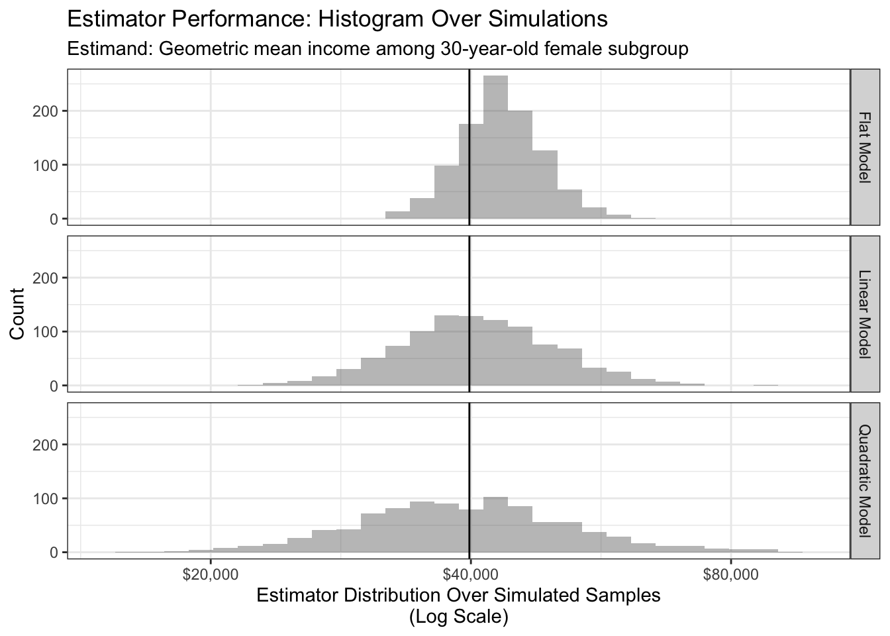
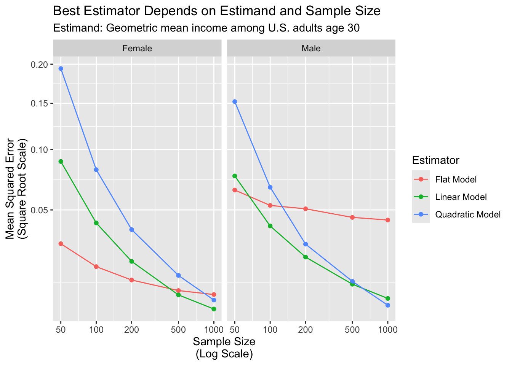

estimator <- function(
data, # from simulate()
model_name # one of "flat", "linear", "quadratic"
) {
# Estimate a regression model
if (model_name == "flat") {
fit <- lm(log(income) ~ sex, data = data)
} else if (model_name == "linear") {
fit <- lm(log(income) ~ sex * age, data = data)
} else if (model_name == "quadratic") {
fit <- lm(log(income) ~ sex * poly(age,2), data = data)
}
# Define x-values at which to make predictions
to_predict <- tibble(
sex = c("female","male"),
age = c(30,30)
)
# Make predictions
predicted <- to_predict |>
mutate(estimate = predict(fit, newdata = to_predict)) |>
# Transform from log scale to dollars scale
mutate(estimate = exp(estimate)) |>
# Append information for summarizing later
mutate(
model_name = model_name,
sample_size = nrow(data)
)
# Return the predicted estimates
return(predicted)
}Evaluate Models
This page presents a \(\hat{Y}\) view of what it means for one model to outperform another model. We first discuss in a simulated setting where we generate many samples from the population and directly observe performance of estimators across those simulated samples. Then, we discuss how one can evaluate performance in the more realistic setting in which only one sample from the population is available,
Simulation: Many samples from the population
- simulate a sample of 100 cases
- apply each model
- compare to the full-data estimate for the target subgroup
See the previous page for code to simulate a sample.
Estimator functions
The functions below is an estimator: it take data in and returns estimates. This function can be applied with the flat, linear, and quadratic models defiend on the previous page.
As an illustration, here is the linear estimator applied to a simulated sample
simulated <- simulate(n = 100)Rows: 420 Columns: 6
── Column specification ────────────────────────────────────────────────────────
Delimiter: ","
chr (1): sex
dbl (5): year, age, meanlog, sdlog, weight
ℹ Use `spec()` to retrieve the full column specification for this data.
ℹ Specify the column types or set `show_col_types = FALSE` to quiet this message.estimator(data = simulated, model_name = "linear")# A tibble: 2 × 5
sex age estimate model_name sample_size
<chr> <dbl> <dbl> <chr> <int>
1 female 30 30274. linear 100
2 male 30 51442. linear 100Apply estimators in repeated samples
How do our estimators perform in repeated samples? In actual problems, one only has one sample. But we created this exercise so that we can use simulate() to simulate many samples from a known data generating process. The code below applies the estimator to many samples of size 100.
We first prepare for parallel computing.
library(foreach)
library(doParallel)
library(doRNG)
cl <- makeCluster(detectCores())
registerDoParallel(cl)Then we apply the estimator many times at each of a series of sample sizes.
simulations <- foreach(
repetition = 1:1000,
.combine = "rbind",
.packages = "tidyverse"
) %dorng% {
foreach(n_value = c(50,100,200,500,1000), .combine = "rbind") %do% {
# Simulate data
simulated <- simulate(n = n_value)
# Apply the three estimators
flat <- estimator(data = simulated, model_name = "flat")
linear <- estimator(data = simulated, model_name = "linear")
quadratic <- estimator(data = simulated, model_name = "quadratic")
# Return estimates
all_estimates <- rbind(flat, linear, quadratic)
return(all_estimates)
}
}Visualize estimator performance
For simplicity, we first focus on one estimand and sample size: modeling the geometric mean of 30-year-old female incomes with a sample size of \(n = 100\). Despite having good performance in the population, the quadratic model has poor performance at this sample size because it has high variance!

To aggregate simulations to a summary score, we use mean squared error (MSE) on the scale of log incomes.
\[\begin{aligned} \theta(\vec{x}) &= \text{True geometric mean in subgroup }\vec{x} \\ \hat\theta_r(\vec{x}) &= \text{Estimated geometric mean in subgroup }\vec{x}\text{ in simulated sample }r \\ \widehat{\text{MSE}}\bigg(\hat\theta(\vec{x})\bigg) &= \frac{1}{R}\sum_{r=1}^R \left(\text{log}(\hat\theta) - \text{log}(\theta)\right)^2 \end{aligned}\]
The figure below reports MSE for each estimator at each sample size.

Conclusions
The results indicate that
- in a small sample (\(n = 50\)), the flat model is best
- the linear model becomes best
- at \(n = 100\) for the male subgroup
- at \(n = 500\) for the female subgroup
- the quadratic model becomes best
- at \(n = 1,000\) in the male subgroup
- at some higher sample size in the female subgroup
There are two main conclusions from this illustration. Which estimator is best is a question that
- depends on the estimand (male or female subgroup), and
- depends on the sample size
Further, although the quadratic fit is best in the population (previous page), a very large sample size is needed before it is best in a sample. This is a reminder that more complex models do not necessarily outperform simpler models, especially in small samples.
Realistic: One sample from the population
In the real world, we cannot evaluate performance over many samples from the population. We typically have only one sample! This section is about evaluating performance when only one sample is available.
The code below generates one sample.
simulated <- simulate(n = 100) |>
# To track the units in this sample, we will add an id column
mutate(id = 1:n())One way to evaluate in one sample is to use a split-sample procedure:
- Split into learning and evaluation sets
- Estimate models in the learning set
- Evaluate in the evaluation set
The advantage of this procedure is that a complex model that performs well in the learning set may not generalize well to the evaluation set. Through sample splitting, we can select a model that performs well at roughly our actual sample size (at least, at 50% of our sample size).
Split into learning and evaluation sets
Create a learning set with half of the cases.
learning <- simulated |>
slice_sample(prop = .5)Create an evaluation set with the other half.
evaluation <- simulated |>
anti_join(learning, by = join_by(id))Estimate models in the learning set
Next, estimate the models in the learning set.
flat <- lm(log(income) ~ sex, data = learning)
linear <- lm(log(income) ~ sex * age, data = learning)
quadratic <- lm(log(income) ~ sex * poly(age,2), data = learning)Evaluate in the evaluation set
Use them to predict in the evaluation set.
predicted <- evaluation |>
mutate(
flat = predict(flat, newdata = evaluation),
linear = predict(linear, newdata = evaluation),
quadratic = predict(quadratic, newdata = evaluation)
)Aggregate prediction errors in the evaluation set to produce mean squared error estimates for each model.
performance <- predicted |>
# Select the actual and predicted values
mutate(actual = log(income)) |>
select(actual, flat, linear, quadratic) |>
# Make a long dataset for ease of analysis
pivot_longer(cols = -actual, names_to = "model_name", values_to = "prediction") |>
# Create a column with errors
mutate(squared_error = (actual - prediction) ^ 2) |>
# Summarize mean squared error
group_by(model_name) |>
summarize(mse = mean(squared_error)) |>
print()# A tibble: 3 × 2
model_name mse
<chr> <dbl>
1 flat 0.441
2 linear 0.457
3 quadratic 0.433Our split-sample procedure estimates that the quadratic model has the best performance!
Difficulties in split-sample model evaluation
- the estimated performance may itself be statistically uncertain
- if the best model in one subgroup is different from the best in another subgroup, then a sample-average MSE may not be optimal for selecting for our task